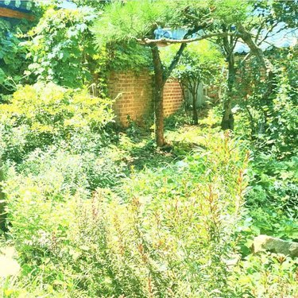
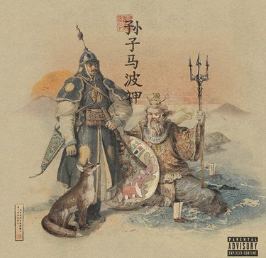
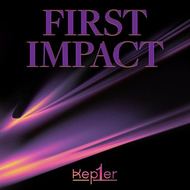
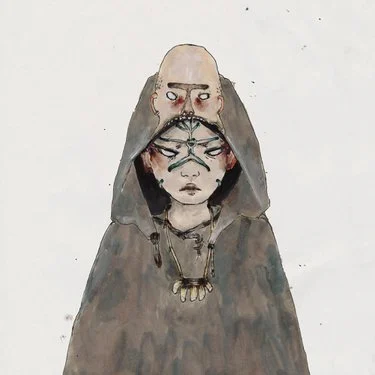
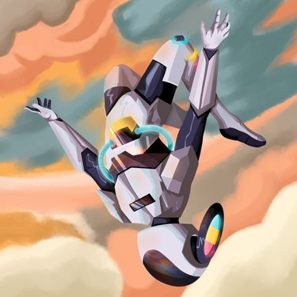
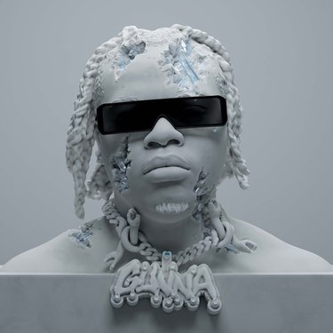
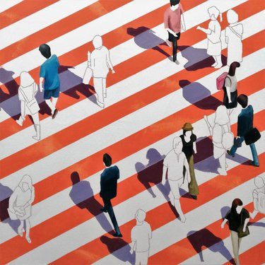

Album Reviews
Album Reviews
Artist: Mydreamfever
Album: Rough and Beautiful Place
Release Date: 1st January
Description: South Korean ambient artist, Side project of Parannoul, Pleasant, Summer Garden, It's decent overall
Yay/Nay?
Artist: Daniel Son & Futurewave
Album: Son Tzu & the Wav.God
Release Date: 1st January
Description: Boom bap artist, Most interesting track, "Son Set (Feat. Saipher Soze)" Rest of the album wasn't special
Yay/Nay?
Artist: KEP1ER
Album: FIRST IMPACT
Release Date: 3rd January
Description: Girl group K-Pop EP, Liked the backing vocals in the track "0.0.0 (Kep1er Ver.)" made it feel kinda epic, Rest was meh
Yay/Nay?
Artist: Burial
Album: Antidawn
Release Date: 6th January
Description: Ambient EP, Soft and relaxing, Rain pitter patter, Bizarre echoed static vocals, Not particulary special, An experience
Yay/Nay?
Artist: Pogo
Album: Cosmoluxe
Release Date: 7th January
Description: Plunderphonics, Catchy with also chill with "PATACAKE", The bass line in "THE BOSS" is great, I like all the tracks
Yay/Nay?
Artist: The Weekend
Album: Dawn FM
Release Date: 7th January
Description: Synthpop and Synth Funk, Jim Carrey radio, High beat tempo, Vocals aren't different, Charm with the album
Yay/Nay?
Artist: Gunna
Album: DS4EVER
Release Date: 7th January
Description: Trap artist, Casey Tatum vocals, Bass, About bitches, Really nothing special, Mind numbing
Yay/Nay?
Artist: Twin Atlantic
Album: Transparency
Release Date: 7th January
Description: Scottish Pop rock artist, Liked the spoken words in "Bang on The Gong", But the vocals and instrumentals need improving
Yay/Nay?